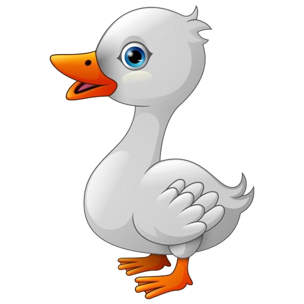

Los patos son un animal volador y acuático porque ellas pueden volar y flotar, los patos poseen un pico largo que les permite capturar su alímento, son muy conocidas por su sonido peculiar y por no encontrarse siempre en el mismo lugar
sabes qué ruido hacen los patos?